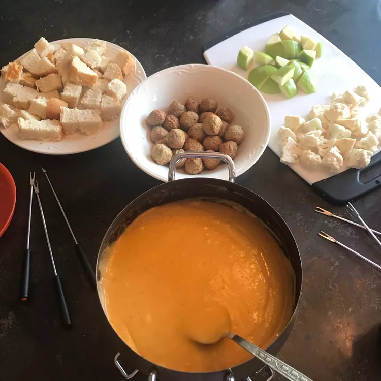

Beer Cheese Fondues

Description
Unbelievable beer cheese fondue that will disappear in a minute!
Serve with cubes of French bread.
Ingredients
- 8 ounces shredded sharp Cheddar cheese
- 8 ounces shredded Swiss cheese
- 2 tablespoons all-purpose flour
- ½ teaspoon salt
- ¼ teaspoon ground black pepper
- 1 clove garlic, halved
- 1 (12 fluid ounce) can or bottle beer
- 1 dash hot pepper sauce (such as Tabasco®)
Steps
- Combine Cheddar cheese, Swiss cheese, flour, salt, and black pepper in a bowl.
- Rub cut side of garlic clove around bottom and sides of fondue pot.
- Pour beer into fondue pot and slowly bring to a simmer over medium-low heat, about 5 minutes.
- Gradually stir cheese mixture into beer, adding small amounts at a time, until
cheese is melted and blended, 10 to 15 minutes. Stir in hot pepper sauce.